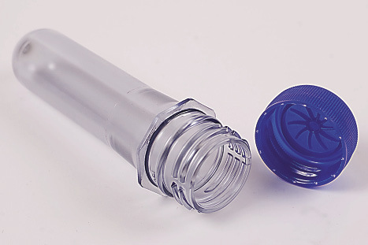
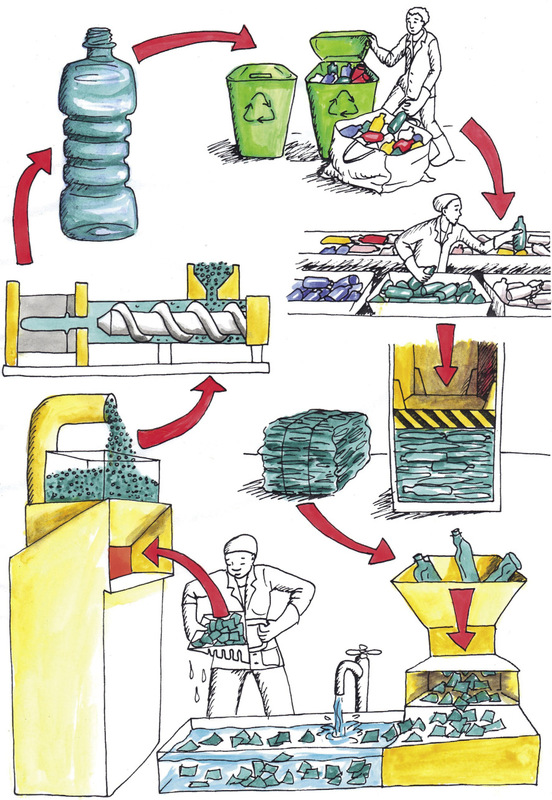

<div class="container">
  <div id="contents" class="col-md-12 main-content"><h1 xmlns="http://www.w3.org/1999/xhtml" id="toc-id-13">Herwinning en vervaardiging met herwonne plastiek</h1>
    
    <p xmlns="http://www.w3.org/1999/xhtml" class="x--Body-opener">In hierdie hoofstuk gaan jy leer hoe plastiek-afval herwin word om nuwe produkte te maak.
</p>

    <h2 xmlns="http://www.w3.org/1999/xhtml" id="toc-id-14">Formering van herwonne plastiekkorrels na nuwe produkte</h2>

    <p xmlns="http://www.w3.org/1999/xhtml" class="x--Body-Text">Daar is twee stappe betrokke in die maak van plastiekbottels; inspuitvormwerk en
blaasvormwerk.
</p>

    
<h3 xmlns="http://www.w3.org/1999/xhtml" class="x--Head-investigation">Stap 1: inspuitvormwerk om voorafvorms van korrels te maak</h3>

    <p xmlns="http://www.w3.org/1999/xhtml" class="x--Body-text-1-3 para-style-override-35">
    <span>Inspuitvormwerk word gebruik om
plastiek “voorafvorms” van bottels te
maak. Voorafvorms is soos klein bottels
met baie dik wande wat reeds die nek
en skroefdraad van die finale bottel
het. Figuur 1 wys die voorafvorm van ’n
plastiekbottel.
</span>.</p>

    <p xmlns="http://www.w3.org/1999/xhtml" class="x--Body-indent-1-3 para-style-override-35">Figuur 2 wys die inspuitvorm-
werkmasjien op verskillende tye van die
inspuitvormwerkproses. 
</p>

    <p xmlns="http://www.w3.org/1999/xhtml" class="x--Body-indent">In hierdie diagram is die plastiek die
gekleurde materiaal. Die rou materiaal wat in die masjien ingaan is amper-ronde
stukkies plastiek wat korrels genoem word. Hulle is aanvanklik hard omdat hulle
nog nie met hitte behandel is nie, en word in blou aangedui op die diagram. Die
plastiek moet sag en warm wees vir die inspuitingsproses om te werk.
</p>

    <figure xmlns="http://www.w3.org/1999/xhtml">


<figcaption>Figuur 1: ’n Voorafvorm van ’n plastiekbottel
 </figcaption>
</figure>

    <p xmlns="http://www.w3.org/1999/xhtml" class="x--Body-indent">Die korrels word vorentoe gedruk deur ’n skroef wat deur ’n motor gedraai word.
Die korrels word terselfdertyd verhit totdat hulle smelt. Die draaikrag van die
skroef veroorsaak druk wat die gesmelte plastiek in die vorm indruk of inspuit.
Sodra die vorm gevul is, sal opening van die vorm waar die gesmelte plastiek
ingespuit is, toegemaak word, en die vorm word laat staan om af te koel.</p>

    <p xmlns="http://www.w3.org/1999/xhtml" class="x--Body-indent">Die plastiek in die vorm stol soos wat dit afkoel. Sodra dit genoegsaam afgekoel
het, word die twee helftes van die vorm oopgemaak sodat die voorafvorm wat
gemaak is, uitgehaal kan word.
</p>

    <p xmlns="http://www.w3.org/1999/xhtml" class="x--Body-indent">Beantwoord die volgende vrae wat verband hou met figuur 2.
</p>

    <p xmlns="http://www.w3.org/1999/xhtml" class="x--Body-investigation-hanging">1. Plaas ’n byskrif by die vorm sodra jy dit sien.
</p>

    <p xmlns="http://www.w3.org/1999/xhtml" class="x--Body-investigation-hanging">2. Waar sal jy die verhitter op die masjien plaas om die plastiek korrels te smelt?
Teken ’n ekstra onderdeel of onderdele by om aan te dui waar die verhitter
moet wees en plaas ’n byskrif by.
</p>

    <p xmlns="http://www.w3.org/1999/xhtml" class="x--Body-investigation-hanging">3. Kyk mooi na ’n plastiekbottel. Jy sal ’n baie dun rant sien waar die twee dele van
die vorms verbind is. Indien jy dit nie kan sien nie, voel met jou vinger rondom die
nek van die bottel. Waarom is die vorm se lyn aan albei kante van die bottelnek?
</p>
    <hr xmlns="http://www.w3.org/1999/xhtml"/><figure xmlns="http://www.w3.org/1999/xhtml">


<figcaption>Figuur 2: Die inspuitvormwerkproses
</figcaption>
</figure>

   
<h3 xmlns="http://www.w3.org/1999/xhtml" class="x--Head-investigation">Stap 2: blaasvormwerk om die voorafvorms in bottels te vorm</h3>

    <p xmlns="http://www.w3.org/1999/xhtml" class="x--Body-Text">Die voorafvorm gaan volgende na blaasvormwerkmasjien. Hierdie masjien blaas
warm lug onder hoë druk in die voorafvorm in. Dit verhit die onderste deel van die
voorafvorm sodat dit sag word en van vorm kan verander. Die hoë lugdruk forseer
die wande van die voorafvorm om uit te sit en die nuwe vorm te vul, amper soos
om ’n ballon op te blaas.
</p>

    <figure xmlns="http://www.w3.org/1999/xhtml">


<figcaption> 3: Blaasvormwerk van ’n voorafvorm om ’n plastiekbottel te maak
</figcaption>
</figure>

    <p xmlns="http://www.w3.org/1999/xhtml" class="x--Body-indent">Dieselfde tipe voorafvorm kan in enige vorm bottel gemaak word, aangesien
dit in verskillende vorms geblaas kan word. Al die bottels het wel dieselfde
aanskroefprop.
</p>

    <p xmlns="http://www.w3.org/1999/xhtml" class="x--Body-investigation-hanging">1. Waarom sal al die verskillende vorm bottels op dieselfde aanskroefprop pas?
</p>
    <hr xmlns="http://www.w3.org/1999/xhtml"/> 

    <h2 xmlns="http://www.w3.org/1999/xhtml" id="toc-id-15">Herwinning van plastiek om nuwe produkte te maak</h2>

    <p xmlns="http://www.w3.org/1999/xhtml" class="x--Body-Text para-style-override-37">In hoofstuk 9 het jy geleer waarom ons plastiekhouers en ander produkte moet
herwin. In hierdie les gaan jy leer hoe PET plastiek herwin kan word om nuwe, rou
materiaal te maak.
</p>

    
<h3 xmlns="http://www.w3.org/1999/xhtml" class="x--Head-investigation">Gevallestudie: die sikliese proses van plastiekherwinning</h3>

    <p xmlns="http://www.w3.org/1999/xhtml" class="x--Body-investigation-hanging para-style-override-24">1. Waarom moet plastiek in verskillende tipes sorteer word voordat dit herwin
kan word?
</p>
    <hr xmlns="http://www.w3.org/1999/xhtml"/><p xmlns="http://www.w3.org/1999/xhtml" class="x--Body-investigation-hanging para-style-override-24">2. Hoe help die herwinningskodes op die plastiekhouers om dit te sorteer?
</p>
    <hr xmlns="http://www.w3.org/1999/xhtml"/><p xmlns="http://www.w3.org/1999/xhtml" class="x--Body-investigation-hanging para-style-override-24">3. Houers bestaan nooit net uit plastiek nie. Kyk mooi na ’n houer. Watter ander
materiale kan jy vind? Jy kan ook na die houers kyk wat jou klasmaats skool toe
gebring het
.</p>
    <hr xmlns="http://www.w3.org/1999/xhtml"/><p xmlns="http://www.w3.org/1999/xhtml" class="x--Body-investigation-hanging">4. Is al die plastiekhouers in die afvalbak skoon? Is dit belangrik?
</p>
    <hr xmlns="http://www.w3.org/1999/xhtml"/><p xmlns="http://www.w3.org/1999/xhtml" class="x--Body-investigation-hanging">5. Plastiekbottels en ander houers neem baie spasie op. Waarom is dit ’n probleem?
</p>
    <hr xmlns="http://www.w3.org/1999/xhtml"/><p xmlns="http://www.w3.org/1999/xhtml" class="x--Body-investigation-hanging para-style-override-24">6. Noem vier stappe waardeur plastiek moet gaan voordat dit geskik is om in
nuwe produkte verander te word.
</p>
    <hr xmlns="http://www.w3.org/1999/xhtml"/><p xmlns="http://www.w3.org/1999/xhtml" class="x--Body-indent">Die illustrasie op die volgende bladsy wys die plastiekherwinningsproses.
</p>

    <p xmlns="http://www.w3.org/1999/xhtml" class="x--Body-indent">Elke tipe plastiek-afval word saamgepers in bale sodat dit maklik vervoer
kan word. By die herwinningsfabriek word die plastiek-afval in klein stukkies
versnipper, sodat dit makliker is om te hanteer en te was.
</p>

    <p xmlns="http://www.w3.org/1999/xhtml" class="x--Body-investigation-hanging para-style-override-38">7.
    Voltooi die stelseldiagram hieronder deur beskrywings van die verskillende
stappe van die herwinningsproses by te skryf. Wenk: Wanneer iets herwin
word, beteken dit dat die uitset ook die inset is, aangesien die proses siklies is.
</p>
<figure xmlns="http://www.w3.org/1999/xhtml">
    <p></p>

<figcaption>Figuur 4: Stelseldiagram van die plastiekbottel herwinningsproses
</figcaption>
</figure>
   <figure xmlns="http://www.w3.org/1999/xhtml">


<figcaption>Figuur 5: Die stappe nodig om afval-plastiek na nuwe produkte te verander
</figcaption>
</figure>


    <h2 xmlns="http://www.w3.org/1999/xhtml" id="toc-id-16">Wat het jy geleer?</h2>

    <p xmlns="http://www.w3.org/1999/xhtml" class="x--Body-investigation-hanging">1. Wat is die rou materiaal vir die bottels in hierdie proses?
</p>
    <hr xmlns="http://www.w3.org/1999/xhtml"/><p xmlns="http://www.w3.org/1999/xhtml" class="x--Body-investigation-hanging">2. Hoe kan verbruikers en huiseienaars dit makliker maak vir die
herwinningsfabrieke om die plastiekprodukte te prosesseer en nuwe bottels te
maak?
</p>
    <hr xmlns="http://www.w3.org/1999/xhtml"/><p xmlns="http://www.w3.org/1999/xhtml" class="x--Body-investigation-hanging">3. ’n Vervaardiger kan een tipe voorafvorm koop en dan verskillende vorms
bottels maak. Hoe kan dit gedoen word?
</p>
    <hr xmlns="http://www.w3.org/1999/xhtml"/><p xmlns="http://www.w3.org/1999/xhtml" class="x--Body-investigation-hanging">4. Watter tipe formering dink jy word gebruik in die maak van plastiekstoele?
</p>
    <hr xmlns="http://www.w3.org/1999/xhtml"/><p xmlns="http://www.w3.org/1999/xhtml" class="x--Body-investigation-hanging">5. Wat is die verskil tussen inspuitvormwerk en blaasvormwerk?
</p>
    <hr xmlns="http://www.w3.org/1999/xhtml"/>
<h3 xmlns="http://www.w3.org/1999/xhtml" class="x--Head-investigation">Volgende week</h3>

    <p xmlns="http://www.w3.org/1999/xhtml" class="x--Body-Text">In die komende drie weke gaan jy jou Mini-PAT vir hierdie kwartaal doen. Jy gaan
ou plastiekbottels vir ’n nuwe doel hergebruik. Hierdie bottels moet egter verander
word, daarom gaan jy die ou bottels gebruik om nuwe produkte te ontwerp en
maak.
</p>
 
 
  </div>
</div>